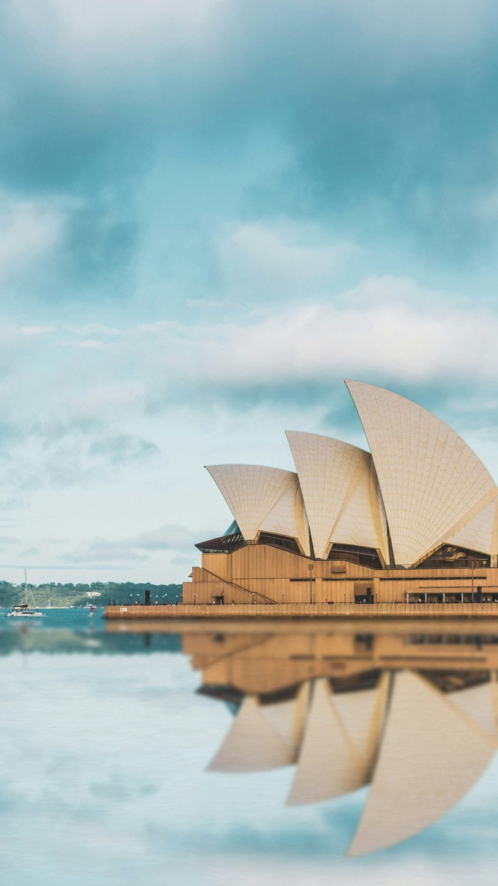
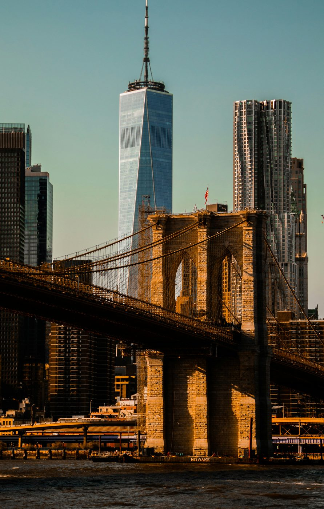
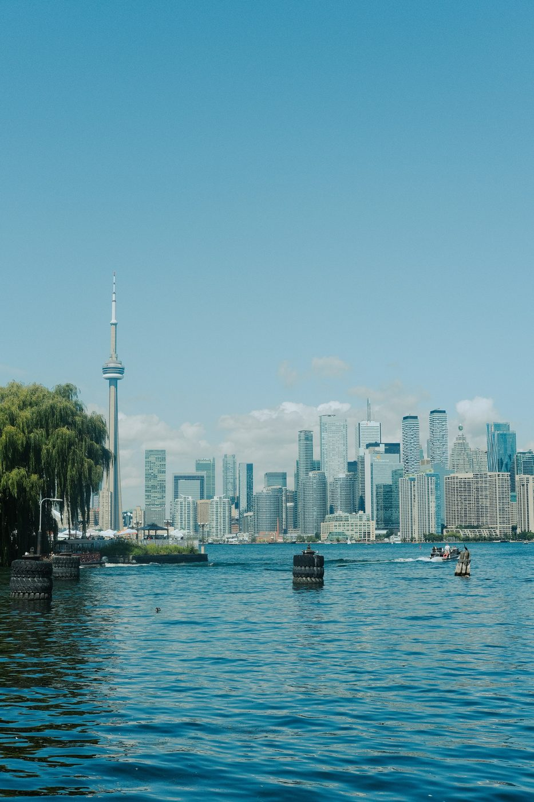
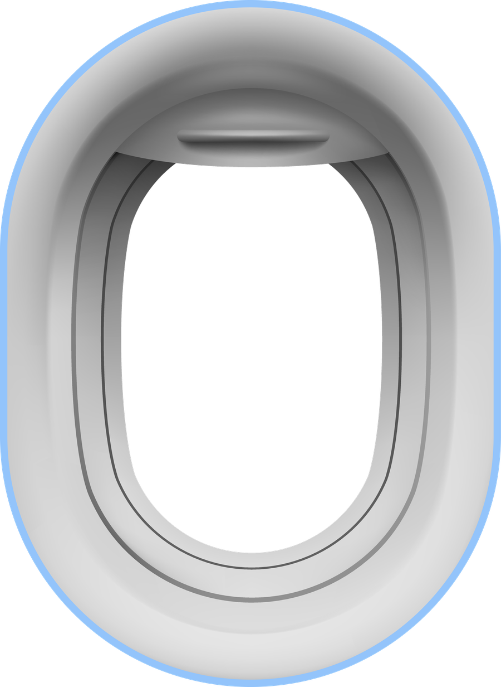

<!--
  ===========================================================================
  LEGACY hero airplane window — preserved fallback
  ===========================================================================

  This is the original raster window treatment that the animated SVG window
  (plane-window.css / plane-window.js) replaced. It is kept intact and working
  so the hero can be reverted at any time if the animated version doesn't hold
  up.

  Everything it needs is still in the repo and untouched:
    · assets/window-final/window-frame.png   the frame artwork
    · styles-hero-full.css                   the `.window*` rules (marked
                                             "LEGACY" near the hero styles)
    · carousel.js                            the original crossfade carousel

  TO REVERT
    1. In hero-full.html and artifact-hero-full.html, swap the
       <div class="plane-window"> … </div> block for the markup below.
    2. Remove the plane-window.css <link> and the plane-window.js <script>.
    3. carousel.js is already included and will pick the slides up again.

  Nothing else in the hero (layout, typography, spacing, the consultant band)
  was changed for the animated version, so no other edits are needed.
-->

<div class="window">
  <div class="window__glass" data-carousel data-interval="4500">
    <div class="window__slide is-active">
      
    </div>
    <div class="window__slide">
      
    </div>
    <div class="window__slide">
      
    </div>
  </div>
  
</div>
